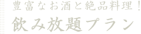

![営業時間] [定休日] 17時22時30分 日曜日(祝前日にあたる場合は営業・月曜振替休) 0252250101 お問い合わせ](../common/img/header/txt_header01.png)
- HOME>
- 郷土料理とお酒
新潟の郷土料理と地酒をリーズナブルに楽しめる「たらい舟」。
鮮度の良い佐渡沖の魚介や旬の地のもの。
40種以上の豊富な新潟の地酒を
存分に楽しんでいただけます。
のど黒焼き
- 新鮮な魚介や耳慣れない珍味まで、
地と旬にこだわった食材を多数ご用意してお待ちいたしております。
寒流と暖流がぶつかり合う日本海。新潟本土と佐渡島の間、佐渡海峡(旧称：越佐(えつさ)海峡)は、冬には凍えるような厳しい海へと変貌。より荒々しくなった波にもまれた佐渡沖の魚はひときわ身が引き締まり、たっぷりと脂と旨みを蓄えた魚へと成長します。
たらい舟コース

- 小木コース
- いか土手焼き
- 佐渡にぎり
- 焼きおにぎり

- 2時間飲み放題＋7品 小木コース 5000円！ ＋500円で地酒47種も飲み放題！
- 2時間飲み放題＋9品 金山コース 6000円！ 地酒47種も飲み放題！
- たらい舟「旬の」特別コース 料理のみ8品 5000円
- 越後の馳走 料理のみ8品 6000円 佐渡沖で揚がる、新鮮なのど黒の焼き物に、たらい舟自慢の南蛮えび真丈揚げ。
地魚中心のすし10貫を味わえる特別コース！ - 板さんおまかせコース 料理のみ10品 8000円 ＋1500円で2時間飲み放題付き！

地酒は常に40種以上の地元銘柄をご用意！お客様ご自身ではなかなか手に入らず、普段は飲めないお酒を、たらい舟でぜひ味わってみてください。
40種以上のある地酒の中から、好きなお酒を3種類お選びいただけます。全て1合ずつのお得感たっぷりな利き酒ができる、お試しセットです。価格 1,000円(税込)
- 北雪(特別本醸造)北雪酒造･･････400円
- 北雪(純米酒)北雪酒造･･････530円
- 真稜(本醸造)逸見酒造･･････400円
- 真野鶴(本醸造)尾畑酒造･･････400円
- 天領盃(本醸造)天領盃酒造･･････400円
- 金鶴(本醸造)加藤酒造･･････400円
- 越後鶴亀(本醸造)越後鶴亀･･････400円
- 越乃寒梅(清酒)石本酒造･･････400円
- 鶴の友(別撰)樋木酒造･･････400円
- 〆張鶴(月)宮尾酒造･･････400円
- 大洋盛(特別本醸造)大洋酒造･･････400円
- 越の松露(辛口特別本醸造)大洋酒造･･････400円
- 村祐(吟醸)村祐酒造･･････650円
- 菊水(本醸造)菊水酒造･･････400円
- 白龍(本醸造)白龍酒造･･････400円
- 麒麟山(伝辛)麒麟山酒造･･････400円
- 麒麟(特別本醸造)下越酒造･･････400円
- 越乃鹿六(純米吟醸)近藤酒造･･････400円
- 越後杜氏(本醸造)金鵄盃酒造･･････400円
- 萬寿鏡(特別本醸造)マスカガミ･･････400円
- 清泉(雪)久須美酒造･･････400円
- 越乃影虎(本醸造)諸橋酒造･･････400円
- 越の誉(本醸造)原酒造･･････400円
- 吉乃川(厳選本醸)吉野川･･････400円
- 群亀(本醸造)関原酒造･･････400円
- 朝日山(百寿)朝日酒造･･････400円
- 長者盛 千萬長者盛新潟銘醸･･････400円
- 越の初梅(本醸造)高の井酒造･･････400円
- 鶴齢(本醸造)青木酒造･･････400円
- 鶴齢雪男 辛口青木酒造･･････400円
- 緑川(本醸造)緑川酒造･･････400円
- 八海山(本醸造)八海酒造･･････400円
- 天神囃子(特別本醸造)魚沼酒造･･････400円
- 苗場山(本醸造)滝沢酒造･･････400円
- スキー正宗(特別本醸造)武蔵野酒造･･････400円
- 能鷹(本醸造)田中酒造･･････400円
- 妙高山(本醸造)妙高酒造･･････400円
- 君の井(本醸造)君の井酒造･･････400円
- 鮎正宗(本醸造)鮎正宗酒造･･････400円
- 謙信(特別本醸造)池田屋酒造･･････400円
- 根知男山(本醸造)渡辺酒造･･････400円
- 月不見の池(本醸造)猪又酒造･･････400円
- 千代の光(本醸造)千代の光酒造･･････400円